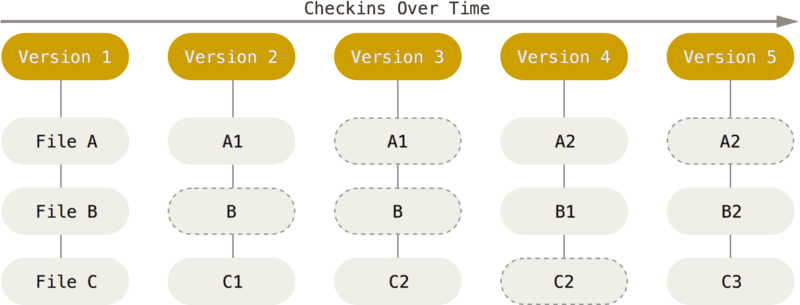
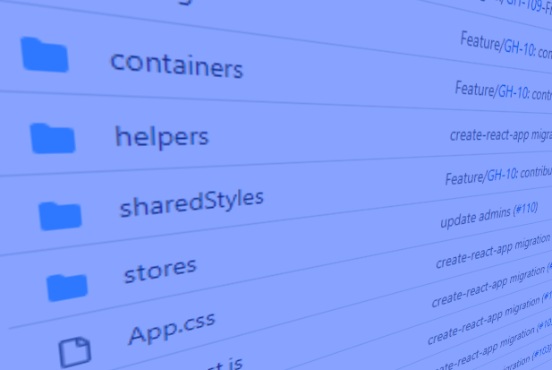
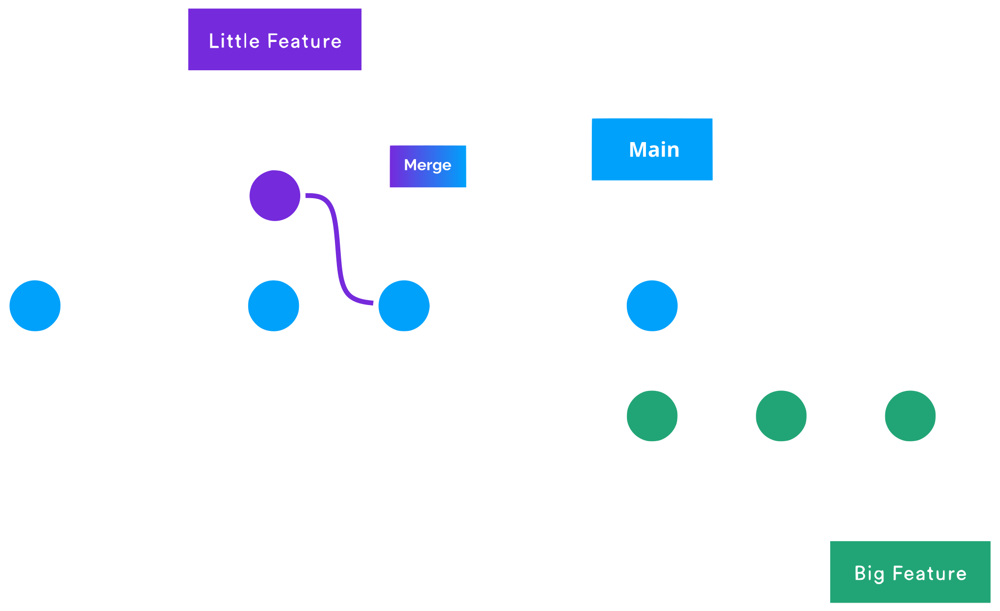
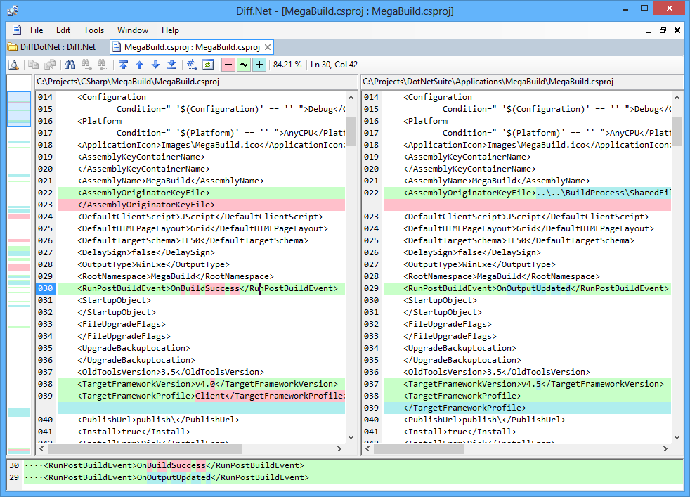
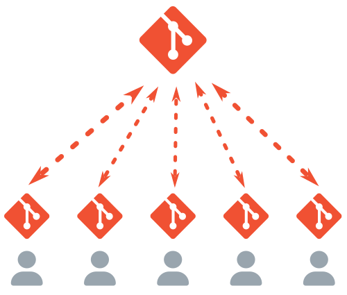

Intro
|
 |
John Riley
Free Code Camp Columbus co-admin
|
### Share Your Experience
---

Join the Free Code Camp Columbus Discord Server!
### We are artists!
---

### Better yet...We are architects!
---
### Our craft is organized
---
### Our solutions give us power!
---

### We have some needs
---
Secure backups
Take a snapshot of our canvas
Easily retrieve previous snapshots
Has a small footprint
Work with our fellow superheroes
## Our superpower
---
Poll: Let's take a poll
### Basic concepts
---
Repository (.git directory)
Main data store of changes
Git thinks about its data as a stream of snapshots

- https://www.git-scm.com/book/en/v2/Getting-Started-What-is-Git
Working directory / Working tree
A single version of the project files for you to use or modify.

Staging area
Stores information about what will go into your next "commit"
A commit
A permanent snapshot of your changes from the staging area
Git workflow

- https://www.git-scm.com/book/en/v2/Getting-Started-What-is-Git
### When things get exciting
---
Branches

diff

Remotes

Source Code hosting Facilities (A Forge)
IDE Integration
### Next Steps
---
Download the command line version...
https://git-scm.com/downloads* also find some GUI clients here
To get started locally...
> git init
GitHub Team Enablement Workshop
### Thank you!
---
John Riley
 @john.riley
@john.riley john@ReadySetAgile
john@ReadySetAgile